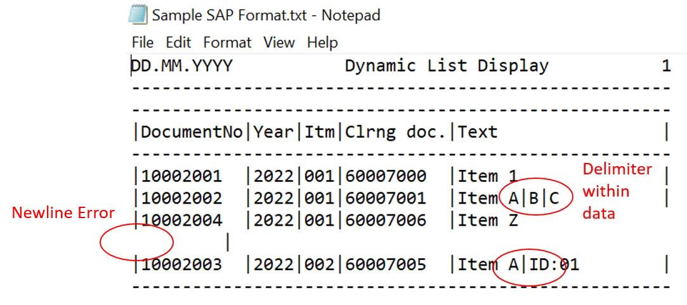

Data cleaning on SAP data extracts in .txt format with Regex and Python
Introduction
During one of our recent projects involving the procure to pay process, our team encountered SAP raw data extracted from the system in .txt format which proved to be difficult to clean using traditional methods like readlines() or split() by delimiters due to some inherent data inconsistencies.
Regex matching proved to be helpful for such scenarios to clean the data.
Common SAP tables in Procure to Pay process
First, lets go through what are common data tables extracted from SAP as part of the Procure to Pay process.
Accounting Related Tables
- BKPF: Accounting Document Header
- BSAK: Accounting: Secondary Index for Vendors
- BSEG: Accounting Document Segment
Purchase Order related Tables
- EKKO: Purchasing Document Header
- EKPO: Purchasing Document Item
- EKBE: History per Purchasing Document
- EKKN: Account Assignment in Purchasing Document
Material Tables
- MAKT: Material Descriptions
There are various websites which provide additional information about the SAP tables.
- https://www.se80.co.uk/training-education/sap-tables/
- https://www.tcodesearch.com/sap-tables/detail?id=BSEG (Might need to enter through changing the id in URL without requiring premium membership)

Format of SAP data extract in .txt file
For our project, the output SAP data extracts is in a .txt format and with the typical structure as shown below:
- The column header details starts at line 4
- The width of each column is consistent between the column headers and the data for each file extracted
- Actual data content starts at line 5 till the end

The sample SAP data in txt format and Jupyter Notebook can be found on GitHub: https://github.com/ZS-Weng/Data_Engineering/tree/main/Data_Cleaning
The two major data discrepancies encountered are:
- Newline character inserted in some of the fields
- Pipe (|) delimiters found within the actual data
Full Code and Output
The full working code for the data cleaning is as shown below:
import pandas as pd
import re
# Read File
with open("Sample SAP Format.txt", encoding="utf-8") as f:
content_raw = f.read()
# Clean extra newline characters
new_line_pattern = re.compile("([^1|-])[\n](.)|(.)[\n]([^|-])")
content_cleaned_newline = new_line_pattern.sub(r"\1 \2", content_raw)
content_split_line = content_cleaned_newline.split("\n")
# Clean the rest of content
# Extract Header and Row Pattern
header_string = content_split_line[3]
column_header = [token.strip() for token in header_string.split("|")][1:-1]
list_column_width = [
"(.{" + str(len(column)) + "})" for column in header_string.split("|")
][1:-1]
column_string_pattern = "[|]" + "[|]".join(list_column_width) + "[|]"
#Extract Data Body
column_pattern = re.compile(column_string_pattern)
cleaned_content = [
[token.strip() for token in column_pattern.match(row).groups()]
for row in content_split_line[5:-2]
]
df_clean = pd.DataFrame(cleaned_content, columns=column_header)